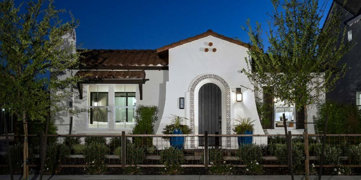

Crocker Village - Alley Row - Residence 6
Petrovich Development / BlackPine Communities
An award-winning alley-loaded residence designed to bridge traditional neighborhood character with a modern urban lifestyle. The home draws on Spanish-influenced architecture, using proportion, material contrast, and detailing to create a sense of authenticity within a contemporary infill context.
A defining move was the integration of a private courtyard that anchors the plan - bringing natural light deep into the home while creating a seamless indoor-outdoor relationship between the great room, kitchen, and primary suite. This strategy enhances livability on a compact urban lot while maintaining privacy and openness.